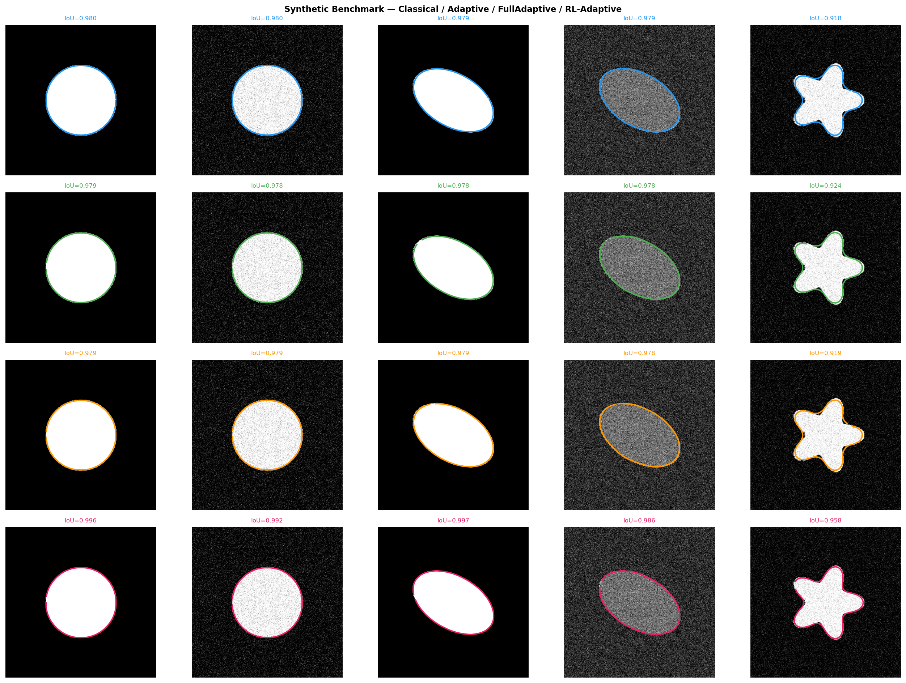
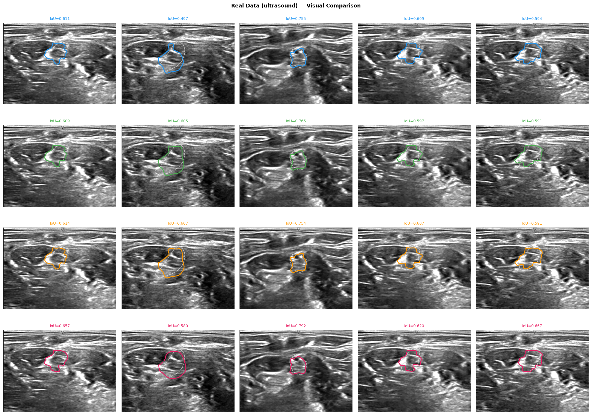
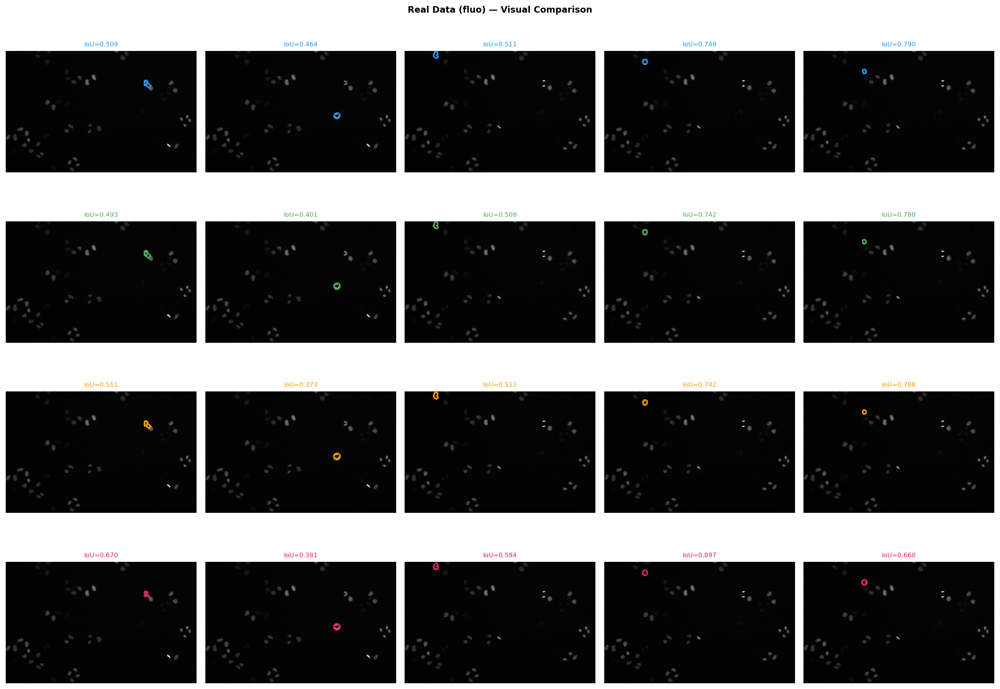

Active contour models often struggle with noisy and low-contrast images because fixed parameters and single-scale optimization adapt poorly to changing boundaries. In this work, we improve contour robustness through three complementary strategies: spatially adaptive parameterization, coarse-to-fine multiscale optimization, and reinforcement-learning-based parameter scheduling. We evaluate Classical, Adaptive, Full-Adaptive, RL-Adaptive, Multi-Scale, and Combined snake variants on synthetic benchmarks, fluorescence microscopy, and ultrasound datasets. Results show that adaptive approaches consistently outperform the Classical Snake baseline. RL-Adaptive achieves the strongest overall performance on challenging synthetic and ultrasound images, while the Combined framework performs best on low-contrast fluorescence microscopy by improving contour fitting robustness. These findings demonstrate that integrating adaptive optimization strategies significantly improves active contour segmentation under difficult imaging conditions.



The project source code and runnable scripts are included in this archive. Important entry points include:
Please see the included README file for setup instructions, dataset organization, and commands for running the experiments.